컴퓨터활용능력-1급 (2013-06-22 기출문제)
1과목: 컴퓨터 일반
1. 다음 중 한글 Windows XP의 레지스트리(Registry)에 대한 설명으로 가장 옳지 않은 것은?
- 윈도우즈에서 사용하는 환경 설정 및 각종 시스템과 관련된 정보가 저장되어 있는 데이터베이스이다.
- 레지스트리에 이상이 있을 경우 윈도우즈 운영체제에 치명적인 손상이 생길 수 있다.
- 레지스트리 파일은 윈도우즈의 부팅 관련 파일과 시스템 관련 프로그램의 설정 파일로 구성되어 있다.
- [시작]-[실행]에서 "regedit" 명령으로 레지스트리 편집기를 실행할 수 있다.
(정답률: 49%)

2. 다음 중 컴퓨터에서 사용하는 캐시 메모리에 관한 설명으로 옳은 것은?
- 중앙처리장치와 주기억장치 사이에 위치하여 컴퓨터의 처리속도를 향상시키는 역할을 한다.
- RAM의 종류 중 DRAM이 캐시메모리로 사용된다.
- 보조기억장치의 일부를 주기억장치처럼 사용하는 메모리 이다.
- 주기억장치의 용량보다 큰 프로그램을 로딩하여 실행 시킬 경우에 사용된다.
(정답률: 78%)
3. 다음 중 쿠키에 대한 설명으로 옳은 것은?
- 인터넷 사용 시 네트워크에 접속하기 위한 프로그램이다.
- 특정 웹 사이트 접속 시 반복적으로 사용되는 접속 정보를 가지고 있는 파일이다.
- 웹 브라우저에서 기본으로 제공하지 않는 기능을 부가적으로 설치하여 구현되도록 한다.
- 자주 사용하는 사이트의 자료를 저장한 후 다시 동일한 사이트 접속 시 자동으로 자료를 불러온다.
(정답률: 73%)
4. 다음 중 개인용 컴퓨터의 메인 보드의 구성 요소와 관련된 설명으로 옳지 않은 것은?
- 칩셋(Chip Set)의 종류에는 사우스 브리지와 노스 브리지 칩이 있으며, 메인 보드를 관리하기 위한 정보와 각 장치를 지원하기 위한 정보가 들어 있다.
- 메인 보드의 버스(Bus)는 컴퓨터에서 데이터를 주고받는 통로로, 사용 용도에 따라 내부 버스, 외부 버스, 확장 버스가 있다.
- 포트(Port)는 메인 보드와 주변장치를 연결하기 위한 접속 장치로 직렬 포트, 병렬 포트, PS/2 포트, USB 포트 등이 있다.
- 바이오스(BIOS)는 컴퓨터의 기본 입출력 장치나 메모리 등의 하드웨어 작동에 필요한 명령을 모아놓은 프로그램으로 RAM에 위치한다.
(정답률: 74%)
5. 다음 중 TCP/IP 통신에서 클라이언트가 인터넷을 사용할 수 있도록 하기 위해 동적인 IP 주소를 할당받도록 해주는 것은?
- WWW
- HTML
- DHCP
- WINS
(정답률: 62%)
6. 다음 중 인터넷 서버까지의 경로를 추적하는 명령어인 'Tracert' 의 실행 결과에 관한 설명으로 옳지 않은 것은?
- IP 주소, 목적지까지 거치는 경로의 수, 각 구간 사이의 데이터 왕복 속도를 확인할 수 있다.
- 특정 사이트가 열리지 않을 때 해당 서버가 문제인지 인터넷 망이 문제인지 확인할 수 있다.
- 인터넷 속도가 느릴 때 어느 구간에서 정체를 일으키는지 확인할 수 있다.
- 현재 자신의 컴퓨터에 연결된 다른 컴퓨터의 IP 주소나 포트 정보를 확인할 수 있다.
(정답률: 79%)
7. 다음 중 이미지 표현 방식에 대한 설명으로 옳지 않은 것은?
- 비트맵 방식은 그림을 픽셀(pixel)이라고 하는 여러 개의 점으로 표시하는 방식이다.
- 비트맵 방식으로 저장된 이미지는 벡터 방식에 비해 메모리를 적게 차지하며, 화면에 보여주는 속도가 느리다.
- 벡터 방식은 점과 점을 연결하는 직선이나 곡선을 이용하여 이미지를 표현하는 방식이다.
- 벡터 방식은 그림을 확대 또는 축소할 때 화질의 손상이 거의 없다.
(정답률: 78%)
8. 다음 중 한글 Windows XP에서 프린터 설치에 관한 설명으로 옳지 않은 것은?
- [프린터 추가 마법사]를 실행하여 새로운 프린터를 설치할 수 있다.
- 새로운 프린터를 설치하는 과정에서 네트워크 프린터를 기본 프린터로 설정하려면 반드시 스풀링의 설정이 필요하다.
- 여러 대의 프린터를 한 대의 컴퓨터에 설치할 수 있고, 한 대의 프린터를 네트워크로 공유하여 여러 대의 컴퓨터에서 사용할 수 있다.
- 기본 프린터는 한 대만 지정할 수 있으며, 기본 프린터로 설정된 프린터도 삭제할 수 있다.
(정답률: 72%)
9. 다음 중 Windows가 시작될 때 자동으로 실행되는 응용 프로그램들 중 일부 프로그램을 자동으로 실행되지 않도록 설정하기 위해 실행해야 할 명령어는?
- taskmgr
- format
- winver
- msconfig
(정답률: 60%)
10. 다음 중 한글 Windows XP에서 [Windows Update] 기능에 관한 설명으로 옳지 않은 것은?
- Windows 운영체제의 보안 및 바이러스에 대한 최신 정보를 인터넷을 통하여 업데이트를 할 수 있다.
- [자동 업데이트] 기능을 이용하면 Windows가 중요한 업데이트를 자동으로 설치하도록 할 수 있다.
- [Windows Update]를 통하여 바이러스 백신 소프트웨어의 업데이트를 할 수 있다.
- 비디오 카드나 사운드 카드와 같은 하드웨어 드라이버와 관련된 업데이트도 할 수 있다.
(정답률: 54%)
11. 운영체제는 사용자 편의성과 시스템 생산성을 높이기 위한 프로그램이다. 다음 중 운영체제의 목적으로 가장 거리가 먼 것은?
- 처리 능력 증대
- 신뢰도 향상
- 응답 시간 단축
- 파일 전송
(정답률: 79%)
12. 다음 중 한글 Windows XP의 [시스템 등록 정보] 창에 관한 설명으로 옳지 않은 것은?
- [시스템 등록 정보] 창에서 컴퓨터 이름을 변경하려면 컴퓨터 관리자 계정이 필요하다.
- [제어판]에 있는 [시스템]을 더블 클릭하면 표시된다.
- [시스템 등록 정보] 창에서 시작 메뉴의 등록 정보를 변경할 수 있다.
- 바탕 화면에 있는 [내 컴퓨터]의 바로 가기 메뉴에서 [속성]을 선택하면 표시된다.
(정답률: 46%)
13. 다음 중 한글 Windows XP의 인쇄 작업에 대한 설명으로 옳지 않은 것은?
- 프린터에서 인쇄 작업이 시작된 경우라도 잠시 중지 시켰다가 다시 이어서 인쇄할 수 있다.
- 여러 개의 출력 파일들의 출력대기 상태를 확인할 수 있다.
- 여러 개의 출력 파일들이 출력대기 할 때 출력 순서를 임의로 조정할 수 있다.
- 일단 프린터에서 인쇄 작업에 들어간 것은 프린터 전원을 끄기 전에는 강제로 종료시킬 수 없다.
(정답률: 78%)
14. 다음 중 네트워크 연결을 위한 동배간처리(Peer-To-Peer) 방식에 대한 설명으로 옳지 않은 것은?
- 컴퓨터와 컴퓨터가 동등하게 연결되는 방식이다.
- 각각의 컴퓨터는 클라이언트인 동시에 서버가 될 수 있다.
- 워크스테이션이나 PC를 단말기로 사용하는 작은 규모의 네트워크에 많이 사용된다.
- 유지보수가 쉬우며, 데이터의 보안이 우수하고 주로 데이터의 양이 많을 때 사용한다.
(정답률: 71%)
15. 다음 중 보안 기법에 대한 설명으로 옳지 않은 것은?
- 사용자 인증은 사용자를 식별하고 정상적인 사용자 인지를 검증함으로써 허가되지 않은 사용자의 접근을 차단하는 방법이다.
- 방화벽 보안 시스템은 외부로 부터 들어오는 불법적 해킹은 차단되나 내부의 불법적 해킹은 차단하지 못한다.
- 암호화 방법은 동일한 키로 데이터를 암호화하고 복호화 하는 공개키 암호화 기법과 서로 다른 키로 데이터를 암호화하고 복호화 하는 비밀키 암호화 기법이 있다.
- 전자우편에서 사용되는 대표적인 보안 방법은 PGP와 PEM 이다.
(정답률: 71%)
16. 다음 중 한 이미지가 다른 이미지로 변형되어 가는 과정을 뜻하는 그래픽 기법으로 특히 영화 산업에서 주로 사용되는 특수 효과는?
- 로토스코핑
- 셀 애니메이션
- 모핑
- 입자 시스템
(정답률: 79%)
17. 다음 중 한 대의 시스템을 여러 사용자가 공동으로 이용 하는 경우 각 사용자들에게 CPU에 대한 사용권을 일정 시간동안 할당하여 마치 각자가 컴퓨터를 독점하여 사용 하고 있는 것처럼 느끼게 하는 시스템 운영방식은?
- 일괄처리시스템
- 다중프로그래밍시스템
- 다중처리시스템
- 시분할시스템
(정답률: 67%)
18. 다음 중 아래 설명에 해당하는 네트워크 구성 장비는?
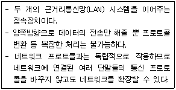
- 라우터
- 스위칭허브
- 브리지
- 모뎀
(정답률: 74%)
19. 다음 중 컴퓨터에서 사용하는 데이터의 논리적 구성단위를 작은 것에서 큰 것 순으로 바르게 나열한 것은?
- 비트 - 바이트 - 워드 - 필드
- 워드 - 필드 - 바이트 - 레코드
- 워드 - 필드 - 파일 - 레코드
- 필드 - 레코드 - 파일 - 데이터베이스
(정답률: 69%)
20. 다음 중 통신 기술에 대한 설명으로 옳지 않은 것은?
- ALL-IP : PSTN과 같은 유선전화망과 무선망, 패킷 데이터망과 같은 기존 통신망 모두가 하나의 IP 기반 망으로 통합된다.
- UWB(Ultra-Wide Band) : 근거리에서 컴퓨터와 주변 기기 및 가전제품 등을 연결하는 초고속 무선인터 페이스로 개인통신망에 사용한다.
- 지그비(Zigbee) : 저전력, 저비용, 저속도와 2.4GHz를 기반으로 하는 홈 자동화 및 데이터 전송을 위한 무선 네트워크 규격으로 반경 1Km 내에서 데이터 전송이 가능하다.
- 와이브로(Wibro) : 무선과 광대역 인터넷을 통합한 의미로 휴대용단말기를 이용하여 정지 및 이동 중에 인터넷에 접속이 가능하다.
(정답률: 51%)
2과목: 스프레드시트 일반
21. 다음 중 아래의 워크시트에서 사원번호의 첫 번째 문자가 'G'인 매출액[B2:B6]의 합계를 구하는 배열 수식은?
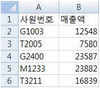
- ={SUM(LEFT($A$2:$A$6,1="G")*$B$2:$B$6)}
- ={SUM((LEFT($A$2:$A$6,1)="G"),$B$2:$B$6)}
- {=SUM(LEFT($A$2:$A$6,1="G"),$B$2:$B$6)}
- {=SUM((LEFT($A$2:$A$6,1)="G")*$B$2:$B$6)}
(정답률: 45%)
22. 다음 중 아래 그림과 같이 하나의 셀에 두 줄 이상의 데이터를 입력하고자 할 때 줄을 바꾸기 위하여 사용하는 바로 가기 키는?
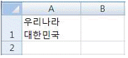
- Ctrl + Enter
- Ctrl + Shift + Enter
- Alt + Enter
- Shift + Enter
(정답률: 71%)
23. [C1]셀에 "=A1*B1"이라는 계산식이 입력되어 있을 때, 다음 중 입력된 수식의 결과를 값으로 변경하는 VBA 코드로 옳은 것은?
- Range("C1").Formula= Range("C1").Count
- Range("C1").Value = Range("C1").Value
- Range("C1").Value = Range("C1").Formula
- Range("C1").Formula= Range("C1").FormulaR1C1
(정답률: 37%)
24. 다음 중 엑셀에서 정렬 기준으로 사용할 수 없는 것은?
- 셀 색
- 셀 아이콘
- 글꼴 색
- 글꼴 크기
(정답률: 52%)
25. 다음 중 차트의 데이터 레이블 추가/제거에 대한 설명으로 옳지 않은 것은?
- 데이터 레이블이 겹치지 않고 읽기 쉽도록 차트에서 데이터 레이블의 위치를 조정할 수 있다.
- 레이블 내용은 계열 이름, 항목 이름, 차트 이름, 값 중에서 한 가지를 선택하여 표시할 수 있다.
- 기본적으로 데이터 레이블은 워크시트의 값에 연결 되며 변경될 때 자동으로 업데이트된다.
- 계열별 데이터 레이블 제거는 삭제를 원하는 계열의 데이터 레이블을 한 번 클릭하여 선택한 후 Delete 키를 누른다.
(정답률: 40%)
26. 다음 중 부분합에 대한 설명으로 옳지 않은 것은?
- 부분합은 SUBTOTAL 함수를 사용하여 합계나 평균 등의 요약 값을 계산한다.
- 첫 행에는 열 이름표가 있어야 하며, 데이터는 그룹화 할 항목을 기준으로 정렬되어 있어야 한다.
- 항목 및 하위 항목별로 데이터를 요약하며, 사용자 지정 계산과 수식을 만들 수 있다.
- 부분합을 제거하면 부분합과 함께 표에 삽입된 윤곽 및 페이지 나누기도 제거된다.
(정답률: 23%)
27. 다음 중 매크로 기록에 관한 설명으로 옳지 않은 것은?
- 작업에 영향을 끼칠 수 있는 동작이 기록되며, 틀린 동작과 불필요한 동작까지 함께 기록된다.
- 기본적으로 상대 참조로 기록되므로 절대 참조를 해야 할 경우 '절대 참조로 기록'을 클릭하여 전환해야 한다.
- 매크로의 작성에 소요된 시간은 기록되지 않는다.
- 미리 어떤 동작, 어떤 기능을 기록할 것인지 순서를 정하여 두고 작업하는 것이 좋다.
(정답률: 53%)
28. 다음 중 아래 그림과 같이 성유나의 성적 변화에 따른 평균의 변화를 표의 형태로 표시하기 위한 데이터 표 작업에 대한 설명으로 옳지 않은 것은?
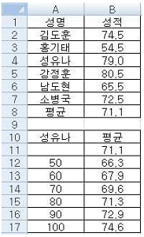
- 데이터 표의 결과 값은 반드시 변화하는 성유나의 성적을 포함한 수식으로 작성되어야 한다.
- 평균의 변화 값을 구하는 데이터 표이므로 평균 [B8]의 수식을 그대로 [B11] 셀에 입력한다.
- [A11:B17] 영역을 선택하고, [데이터]-[데이터 도구]-[가상 분석]-[데이터 표]를 선택하여 실행 한다.
- [데이터 표] 대화상자에서 '행 입력 셀'에 [B4]를 입력한다.
(정답률: 40%)
29. 다음 중 [데이터]-[외부 데이터 가져오기]로 가져올 수 없는 파일 형식은?
- Access(*.mdb)
- 웹(*.htm)
- XML 데이터(*.xml)
- MS-Word(*.doc)
(정답률: 62%)
30. 다음 시트에서 [B11] 셀에 영업1부의 인원수를 구하는 수식으로 옳지 않은 것은?
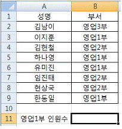
- =COUNTIF(B2:B9, "영업1부")
- {=SUM((B2:B9="영업1부")*1)}
- {=SUM(IF(B2:B9="영업1부",1))}
- {=COUNT(IF(B2:B9="영업1부",1,0))}
(정답률: 40%)
31. 다음 중 아래 도넛형 차트의 구멍 크기를 작게 하는 방법으로 옳은 것은?
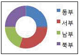
- [차트 옵션] 대화상자의 [도넛형 차트] 탭에서 [직경]의 값을 작게 조정한다.
- [보기] 메뉴의 [차트 직경 조정]을 선택한다.
- [데이터 계열 서식] 대화상자의 [계열 옵션]에서 [도넛 구멍 크기]의 값을 작게 조정한다.
- [차트 옵션] 대화상자에서 [옵션] 탭의 [내부 차트 크기]의 값을 작게 조정한다.
(정답률: 50%)
32. 다음 중 메모에 대한 설명으로 옳지 않은 것은?
- 새 메모를 작성하려면 바로 가기 키 〈Shift〉+〈F2〉 키를 누르거나 [검토]탭 [메모]그룹에서 '새 메모'를 클릭한다.
- 셀을 이동하면 메모를 제외한 수식, 결과값, 셀 서식 등이 이동된다.
- 한 시트에 여러 개의 메모가 삽입되어 있는 경우 [검토]탭 [메모]그룹의 '이전' 또는 '다음'을 이용하여 메모들을 탐색할 수 있다.
- 통합 문서에 포함된 메모를 시트에 표시된 대로 인쇄하거나 시트 끝에 인쇄할 수 있다.
(정답률: 59%)
33. 다음 중 페이지 레이아웃 및 인쇄 관련 설정에 대한 설명으로 옳지 않은 것은?
- [인쇄 미리 보기] 상태에서는 마우스를 이용하여 페이지 여백을 조정할 수 있다.
- [페이지 설정]대화상자의 [페이지]탭에서 확대/축소 배율을 지정할 수 있다.
- [보기]탭 [통합 문서 보기]그룹의 '페이지 나누기 미리 보기'를 클릭하면 머리글 및 바닥글을 쉽게 삽입할 수 있다.
- '페이지 나누기 삽입'은 새 페이지가 시작되는 위치를 지정하는 것으로 선택 영역의 위쪽과 왼쪽에 페이지 나누기가 삽입된다.
(정답률: 50%)
34. 다음 중 엑셀의 화면 제어에 관한 설명으로 옳지 않은 것은?
- 숨겨진 통합 문서를 표시하려면 [보기]-[창]-'숨기기 취소'를 실행한다.
- 틀 고정에 의해 분할된 왼쪽 또는 위쪽 부분은 인쇄 시 반복할 행과 반복할 열로 자동 설정된다.
- [Excel 옵션]의 [고급] 탭에서 'IntelliMouse로 화면 확대/축소' 옵션을 설정하면 ＜Ctrl＞키를 누르지 않은 상태에서 마우스 휠의 스크롤만으로 화면의 축소 및 확대가 가능하다.
- 확대/축소 배율은 선택된 시트에만 적용된다.
(정답률: 52%)
35. 아래 그림과 같이 발령부서[C2:C11]는 부서명[E2:E4]의 데이터 값을 번호[A2:A11]를 기준으로 순서대로 반복하여 배정하고자 한다. [C2] 셀에 입력할 수식으로 옳은 것은?
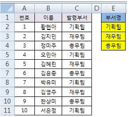
- =INDEX($E$2:$E$4, MOD(A2,3))
- =INDEX($E$2:$E$4, MOD(A2,3)+1)
- =INDEX($E$2:$E$4, MOD(A2-1,3)+1)
- =INDEX($E$2:$E$4, MOD(A2-1,3))
(정답률: 61%)
36. 다음 중 셀 스타일에 대한 설명으로 옳지 않은 것은?
- '표준' 셀 스타일은 삭제할 수 없다.
- 셀 스타일은 글꼴과 글꼴 크기, 표시 형식, 셀 테두리 및 셀 음영 등의 서식 특성이 정의된 집합이다.
- 사용자가 만든 셀 스타일은 기본적으로 모든 엑셀 통합 문서에서 사용할 수 있다.
- 셀 스타일을 삭제하면 해당 스타일이 적용됐던 영역의 스타일이 '표준' 셀 스타일로 변경되어 적용된다.
(정답률: 57%)
37. 통합 문서의 첫 번째 시트 뒤에 새로운 시트를 추가하는 프로시저를 작성하려고 한다. 다음 중 ( )에 해당하는 인수로 옳은 것은?
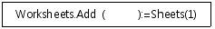
- Left
- Right
- After
- Before
(정답률: 62%)
38. 다음 중 아래의 서브 프로시저를 호출하는 방법으로 옳은 것은?
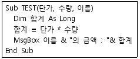
- TEST(200, 500, "이순신")
- TEST 200, 500, "이순신"
- Call TEST 200, 500, "이순신"
- =TEST(200, 500, "이순신")
(정답률: 39%)
39. 다음 중 아래 그림에서 수식 =DMIN(A1:C6,2,E2:E3)을 실행하였을 때의 결과값으로 옳은 것은?
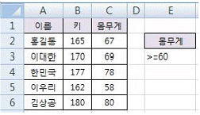
- 165
- 170
- 177
- 162
(정답률: 54%)
40. 다음 중 Excel 통합 문서의 웹 페이지(.htm, .html) 형식 저장과 관련된 설명으로 옳지 않은 것은?
- 조건부 서식 중 데이터 막대, 아이콘 집합은 지원되지 않는다.
- 회전된 텍스트는 올바로 표시되지 않는다.
- 배경 질감 및 그래픽과 같은 관련 파일은 하위 폴더에 저장된다.
- 일부 시트만을 선택하여 저장할 수 없다.
(정답률: 57%)
3과목: 데이터베이스 일반
41. 다음 중 Access에서 외부 데이터 가져오기 기능을 이용하여 테이블을 생성할 수 없는 파일 형식은?
- 다른 Access 데이터베이스 파일
- Excel 파일
- Paradox 파일
- 압축된 zip 파일
(정답률: 64%)
42. 다음 중 아래와 같은 이벤트 프로시저에 대한 설명으로 옳지 않은 것은?
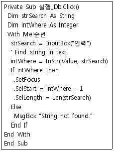
- intWhere 변수에는 10.56과 같은 실수를 저장할 수 없다.
- strSearch 변수에는 사용자가 입력 상자를 통해 입력한 값이 저장된다.
- InStr(.Value, strSearch)에서 .Value는 strSearch 변수의 값을 말한다.
- 입력 상자에서 입력된 문자열과 같은 내용을 찾지 못하면 'String not found.'란 메시지 상자를 표시 한다.
(정답률: 48%)
43. 다음은 데이터베이스관리시스템(DBMS)의 기능과 각 기능에 대한 설명이다. 바르게 짝지어진 것은?
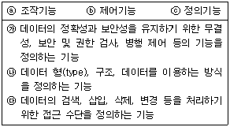
- a-가, b-나, c-다
- a-다, b-가, c-나
- a-가, b-다, C-나
- a-나, b-가, c-다
(정답률: 63%)
44. 다음 중 피벗 테이블 폼에 대한 설명으로 옳지 않은 것은?
- 데이터를 요약 분석할 수 있는 피벗 테이블 형식으로 표현한 폼이다.
- 작성된 피벗 테이블 폼의 스타일은 [피벗 테이블 도구]-[정렬]-[자동 서식]을 이용하여 변경할 수 있다.
- 피벗 테이블 필드 목록을 드래그 하여 필터, 열, 행 필드를 손쉽게 지정할 수 있다.
- [만들기]탭 [폼]그룹의 '기타 폼'에서 '피벗 테이블'을 선택하여 만든다.
(정답률: 49%)
45. 다음 중 Access의 테이블 디자인에서 필드 속성의 입력 마스크가 'L&A'로 설정되어 있을 때 입력 가능한 데이터는?
- 123
- 1AB
- AB
- A1B
(정답률: 57%)
46. 다음 중 보고서에서 그룹 머리글의 '반복 실행 구역' 속성을 '예'로 설정한 경우에 대한 설명으로 옳은 것은?
- 매 레코드마다 해당 그룹 머리글이 표시된다.
- 한 그룹이 여러 페이지에 걸쳐 표시되는 경우 각 페이지에 해당 그룹 머리글이 표시된다.
- 그룹 머리글이 보고서의 시작 부분과 끝 부분에 표시된다.
- 매 그룹의 시작 부분에 해당 그룹 머리글이 표시된다.
(정답률: 38%)
47. 아래 내용 중 하위 폼에 대한 옳은 설명만을 나열한 것은?
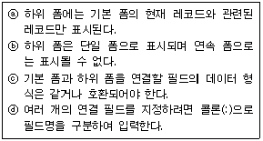
- ⓐ,ⓑ,ⓒ
- ⓐ,ⓒ
- ⓑ,ⓒ,ⓓ
- ⓑ,ⓓ
(정답률: 61%)
48. 다음 중 기본 키에 대한 설명으로 옳지 않은 것은?
- 한 개의 필드만 기본 키로 지정할 수 있다.
- 기본 키가 설정되어 있는 상태에서 다른 필드를 기본 키로 지정하면 기존의 기본 키는 자동으로 해제된다.
- 여러 필드를 묶어서 기본 키로 사용할 수 있다.
- 기본 키로 지정되면 중복 불가능한 인덱스로 자동 설정된다.
(정답률: 56%)
49. 다음과 같은 [동아리회원] 테이블에서 학과명을 입력받아 일치하는 학과의 학생만을 조회할 수 있도록 하는 쿼리의 SQL문으로 옳은 것은?
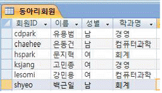
- select * from 동아리회원 where 학과명 = [학과를 입력하시오]
- select * from 동아리회원 where 학과명 = "학과를 입력하시오"
- select * from 동아리회원 where 학과명 in (학과를 입력하시오)
- select * from 동아리회원 where 학과명 like "학과를 입력하시오"
(정답률: 48%)
50. 다음 중 [학생] 테이블에서 '점수'가 60 이상인 학생들의 인원수를 구하는 식으로 옳은 것은? (단, '학번' 필드는 [학생] 테이블의 기본 키이다.)
- =DCount("[학생]","[학번]","[점수]＞= 60")
- =DCount("[학번]","[학생]","[점수]＞= 60")
- =DLookUp("[학생]","[학번]","[점수]＞= 60")
- =DLookUp("*","[학생]","[점수]＞= 60")
(정답률: 54%)
51. 다음 중 우편물 레이블 마법사를 이용한 레이블 보고서 생성에 대한 설명으로 옳지 않은 것은?
- 레이블은 우편물 발송을 위한 것이므로 반드시 출력하려는 테이블에 우편번호와 주소가 있어야 한다.
- 수신자 성명 뒤에 '귀하'와 같은 문구를 넣을 수도 있다.
- 레이블의 크기는 다양하게 준비되어 있으며, 필요에 따라 사용자가 직접 지정할 수도 있다.
- 레이블 형식은 낱장 용지나 연속 용지를 선택 할 수 있다.
(정답률: 60%)
52. 다음 중 폼에 삽입된 텍스트 상자 컨트롤의 이름을 변경하는 방법으로 옳은 것은?
- 텍스트 상자 컨트롤의 바로 가기 메뉴에서 '변경'을 선택한 후 이름을 입력한다.
- 텍스트 상자 컨트롤에 연결된 레이블 컨트롤에 이름을 입력한다.
- 텍스트 상자 컨트롤의 속성 창을 열고 이름 항목에 입력한다.
- 텍스트 상자 컨트롤을 클릭한 다음 컨트롤 안에 이름을 입력한다.
(정답률: 45%)
53. 다음 중 [주소록] 이라는 연결 테이블의 내용을 [거래처] 테이블에 추가하는 SQL문으로 옳은 것은? (단, 두 테이블은 모두 '거래처번호', '거래처명', '연락처'라는 동일한 데이터 형식과 필드 순서를 갖고 있다. 또한 '거래처번호' 필드를 기준으로 [거래처] 테이블에 존재하지 않는 데이터만을 추가하고자 한다.)
- insert into 거래처(거래처번호, 거래처명, 연락처) set 주소록(거래처번호, 거래처명, 연락처) where 거래처번호 is not null
- insert into 거래처 select * from 주소록 where 거래처번호 not in (select 거래처번호 from 거래처)
- insert into 거래처 values 주소록(거래처번호, 거래처명, 연락처)
- insert into 거래처(거래처번호, 거래처명, 연락처) select 거래처번호, 거래처명, 연락처 from 주소록 where 거래처번호 not in (select 거래처번호 from 주소록)
(정답률: 44%)
54. 다음 중 select문에서 사용되는 group by와 관련된 설명으로 옳지 않은 것은 ?
- group by절을 이용하면 Sum 또는 Count와 같은 집계 함수를 사용하여 요약 값을 생성할 수 있다.
- group by절에 대한 조건식은 where절을 사용한다.
- group by절에서 지정한 필드 목록의 값이 같은 레코드를 단일 레코드로 결합한다.
- group by절을 이용하면 설정한 그룹별로 분석할 수 있다.
(정답률: 59%)
55. 다음 중 다른 데이터베이스의 원본 데이터를 연결 테이블로 가져온 테이블과 새 테이블로 가져온 테이블에 대한 설명으로 옳지 않은 것은?
- 연결 테이블로 가져온 테이블을 삭제하면 연결되어 있는 원본 데이터베이스 테이블도 삭제된다.
- 연결 테이블로 가져온 테이블을 삭제해도 원본 테이블은 삭제되지 않고 연결만 삭제된다.
- 새 테이블로 가져온 테이블을 삭제해도 원본 테이블은 삭제되지 않는다.
- 새 테이블로 가져온 테이블을 이용하여 폼이나 보고서를 생성할 수 있다.
(정답률: 70%)
56. 다음 중 정렬 및 그룹화 기능을 사용하여 업체별 판매금액의 합계를 보고서 형태로 작성하려는 작업에 관련된 설명으로 옳지 않은 것은?
- 업체명이나 업체번호 필드를 이용하여 데이터를 그룹화 한다.
- 그룹의 머리글이나 바닥글에 =Sum([판매금액])과 같은 함수를 이용하여 요약정보를 생성한다.
- 본문 영역에는 아무런 컨트롤도 추가하지 않고 간격을 0으로 좁힌다.
- 전체 업체의 총 판매금액에 대한 사항은 페이지 바닥글 에서 구성한다.
(정답률: 34%)
57. 다음 중 데이터베이스의 정규화와 정규형에 대한 설명으로 옳지 않은 것은?
- 정규화의 목적은 데이터베이스의 중복성을 최소화 하고, 정보의 일관성을 보장하는데 있다.
- 정규화란 릴레이션 스키마 속성들 간의 종속성을 분석하여 바람직한 속성을 가진 릴레이션으로 분해 하는 과정이다.
- 데이터베이스 정규화에는 몇 가지 규칙이 있는데, 규칙을 정규형이라고 한다.
- 제1정규형이 지켜진 데이터베이스는 제2정규형과 제3정규형도 만족하며, 대부분의 응용프로그램에서 필요한 가장 높은 수준으로 간주된다.
(정답률: 56%)
58. 다음 중 두 테이블에서 조인(Join)된 필드가 일치하는 레코드만 결합하는 조인일 때, 괄호 안에 알맞은 것은?
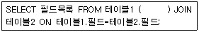
- INNER
- OUTER
- LEFT
- RIGHT
(정답률: 72%)
59. 다음 중 보고서에서 순번 항목과 같이 그룹 내의 데이터에 대한 일련번호를 표시하기 위해 텍스트 상자 컨트롤의 속성을 설정하는 방법으로 옳은 것은?
- 텍스트 상자의 컨트롤 원본을 '=1'로 지정하고, 누적 합계 속성을 '그룹'으로 지정한다.
- 텍스트 상자의 컨트롤 원본을 '+1'로 지정하고, 누적 합계 속성을 '그룹'으로 지정한다.
- 텍스트 상자의 컨트롤 원본을 '+1'로 지정하고, 누적 합계 속성을 '모두'로 지정한다.
- 텍스트 상자의 컨트롤 원본을 '=1'로 지정하고, 누적 합계 속성을 '모두'로 지정한다.
(정답률: 55%)
60. 매크로를 이용하여 외부의 응용 프로그램을 실행하려고 한다. 이 때 사용할 수 있는 가장 적절한 매크로 함수는 무엇인가?
- RunCommand
- RunMacro
- RunSQL
- RunApp
(정답률: 46%)